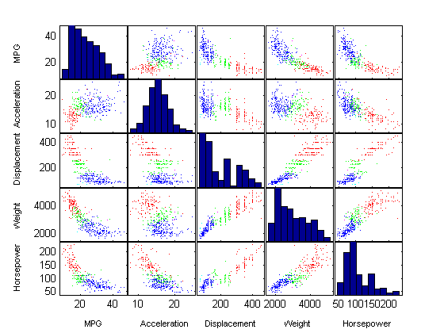
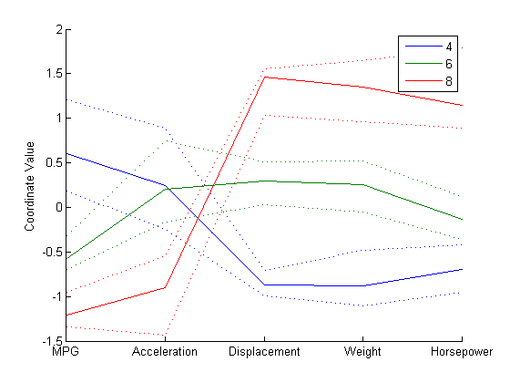
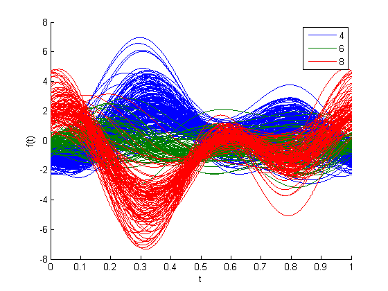
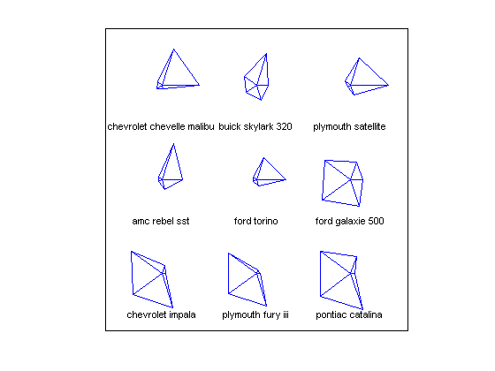
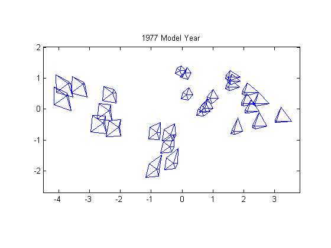
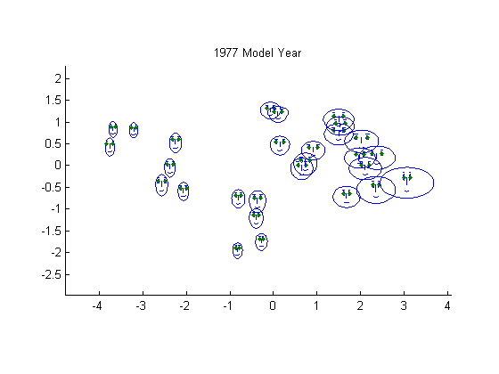

多変量データの可視化
統計分析の多くでは、予測変数と応答変数という 2 つの変数のみを使用します。このようなデータは、2 次元散布図、二変量ヒストグラム、ボックスプロットなどを使用すると容易に可視化できます。また、3 次元散布図、または色などでエンコードされた第 3 の変数を持つ 2 次元散布図を使用して、三変量データを可視化することも可能です。しかし、データセットの多くには、変数が多数含まれるため、直接的な可視化は困難です。このデモでは、Statistics Toolbox™ を使用して MATLAB® で高次元データを可視化する方法をいくつか調べます。
目次
このデモでは、carbig データセットを使用します。これは、1970 年代と 1980 年代の約 400 台の自動車について測定されたさまざまな変数を含むデータセットです。燃料効率 (ガロンあたりのマイル数、MPG)、加速度 (マイル時速が 0 から 60 に達するまでの秒数)、エンジン排気量 (立方インチ)、重量、および馬力の各値を使用した多変量の視覚化を示します。気筒数を使用して、観測値をグループ化します。
load carbig X = [MPG,Acceleration,Displacement,Weight,Horsepower]; varNames = {'MPG'; 'Acceleration'; 'Displacement'; 'Weight'; 'Horsepower'};
散布図行列
低次元の部分空間のスライスを表示することは、2 次元または 3 次元の制限を部分的に回避する方法の 1 つです。たとえば、関数 gplotmatrix を使用すると、5 つの変数間の二変量散布図すべての配列を、各変数の一変量ヒストグラムと共に表示することができます。
figure gplotmatrix(X,[],Cylinders,['c' 'b' 'm' 'g' 'r'],[],[],false); text([.08 .24 .43 .66 .83], repmat(-.1,1,5), varNames, 'FontSize',8); text(repmat(-.12,1,5), [.86 .62 .41 .25 .02], varNames, 'FontSize',8, 'Rotation',90);
各散布図における点は、気筒数によって色分けされています。4 気筒の場合は青色、6 気筒の場合は緑色、8 気筒の場合は赤色です。さらに、少数の 5 気筒車も存在し、またロータリー エンジン車は 3 気筒車と見なされます。この一連のプロットにより、変数ペア間の関係のパターンを容易に特定できるようになります。ただし、高次元に重要なパターンが存在する場合があり、このようなパターンをこのプロットで容易に認識することはできません。
平行座標プロット
散布図行列には、二変量関係のみが表示されます。しかし、すべての変数を一緒に表示できる別の方法があります。この方法を利用すると、変数間の高次元の関係を調べることができます。最も簡単な多変量プロットは平行座標プロットです。このプロットでは、通常の直交座標グラフのように直交軸を使用するのではなく、座標軸がすべて水平に並べられます。各観測値はプロット内で、結合された一連の線分として表されます。たとえば、4 気筒、6 気筒、または 8 気筒のすべての自動車と、グループ別の色観測値のプロットを作成できます。
Cyl468 = ismember(Cylinders,[4 6 8]); parallelcoords(X(Cyl468,:), 'group',Cylinders(Cyl468), ... 'standardize','on', 'labels',varNames)

このプロットにおける水平方向は座標軸を表し、垂直方向はデータを表しています。各観測値は 5 つの変数に対する測定値から成り、各測定値は、対応する線が各座標軸と交差する高さとして表されます。5 つの変数の範囲は大きく異なるため、このプロットは標準値 (ゼロ平均と単位分散を持つように各変数が標準化されている) で作成されています。グラフで色分けを利用することで、たとえば、8 気筒車では通常、MPG と加速度の値が低く、排気量、重量、および馬力の値が高いことなどがわかるようになります。
グループ別に色分けすると、多数の観測値を含む平行座標プロットが読み取りにくくなることがあります。また、各グループについて中央値と四分位点 (25% と 75% の点) のみが表示される平行座標プロットを作成することもできます。これにより、グループ間の典型的な相違点と類似点を容易に識別できるようになります。他方では、各グループの異常値に対して最も関心がある場合がありますが、このプロットでは、このような異常値はまったく示されません。
parallelcoords(X(Cyl468,:), 'group',Cylinders(Cyl468), ... 'standardize','on', 'labels',varNames, 'quantile',.25)
Andrews プロット
同様のタイプの多変量視覚化方法が Andrews プロットです。このプロットは、区間 [0,1] における平滑関数として各観測値を表します。
andrewsplot(X(Cyl468,:), 'group',Cylinders(Cyl468), 'standardize','on')
各関数は、対応する観測値に係数が等しいフーリエ級数です。この例では、フーリエ級数は 5 つの項を持っています。すなわち、1 つの定数、周期が 1 と 1/2 の 2 つの正弦項、および 2 つの類似した余弦項です。最初の 3 つの項による、関数の形状に対する影響は Andrews プロットで最も顕著であるため、最初の 3 つの変数のパターンが最も容易に認識しやすい傾向にあります。
t = 0 の時点においてグループ間に明白な相違がありますが、これは、最初の変数 MPG が、4 気筒車、6 気筒車、および 8 気筒車の間の際立った特徴の 1 つであることを示しています。より興味深いのは、t = 1/3 の辺りにおける 3 つのグループ間の相違です。この値を Andrews プロット関数の式に当てはめると、グループ間を識別する、変数の線形結合を定義する係数の集合が得られます。
t1 = 1/3; [1/sqrt(2) sin(2*pi*t1) cos(2*pi*t1) sin(4*pi*t1) cos(4*pi*t1)]
ans =
0.7071 0.8660 -0.5000 -0.8660 -0.5000
これらの係数から、以下のことを確認できます。すなわち、4 気筒車を 8 気筒車から識別する 1 つの方法は、前者は MPG と加速度の値が高く、排気量、馬力、および特に馬力が低いが、後者はその反対である、ということです。これは、平行座標プロットから引き出された結論と同じです。
グリフ プロット
多変量データを視覚化する別の方法では、"グリフ" を使用して次元を表します。関数 glyphplot は、スターとチャーノフの顔という 2 つのタイプのグリフをサポートします。例として、自動車データの最初の 9 つのモデルのスター プロットを以下に示しています。スター内の各スポークは 1 つの変数を表し、スポークの長さは、各観測の変数の値に比例します。
h = glyphplot(X(1:9,:), 'glyph','star', 'varLabels',varNames, 'obslabels',Model(1:9,:)); set(h(:,3),'FontSize',8);
アクティブな MATLAB figure ウィンドウでは、このプロットにより、データ カーソルを使用してデータ値を対話形式で調べることができます。たとえば、Ford Torino のスターの右側のポイントをクリックすると、この自動車の MPG 値が 17 であることが示されます。
グリフ プロットと多次元尺度法
任意の順序でグリッド上にスターをプロットすると、隣接するスターの外観がまったく異なってしまって、図がわかりにくくなることがあります。このような場合、認識できるスムーズなパターンがなくなります。この問題を回避する方法として、多次元尺度法 (MDS) をグリフ プロットの組み合わせが役に立ちます。このことを示すために、まず、1977 年のすべての自動車を選択し、関数 zscore を使用して、5 つの各変数を、平均 0 と分散 1 を持つように標準化します。次に、これらの標準化された観測値間のユークリッド距離を非類似度の尺度として計算します。この選択は、実際に利用するには単純すぎますが、例示目的としてはわかりやすいでしょう。
models77 = find((Model_Year==77)); dissimilarity = pdist(zscore(X(models77,:)));
最後に、mdscale を使用して、点間距離が元の高次元データ間の非類似度に近似するような、2 次元の位置の集合を作成し、これらの位置を使用してグリフをプロットします。この 2 次元プロットにおける距離によってデータは大ざっぱにしか再現されませんが、このタイプのプロットではこの程度で十分です。
Y = mdscale(dissimilarity,2); glyphplot(X(models77,:), 'glyph','star', 'centers',Y, ... 'varLabels',varNames, 'obslabels',Model(models77,:), 'radius',.5); title('1977 Model Year');
このプロットでは、低次元化方法として MDS を使用して、2 次元プロットを作成しました。通常、これは情報の損失を意味しますが、グリフをプロットすることで、すべての高次元情報をデータに組み込むことができました。MDS を使用する目的は、データの変化に一定の規則性を持たせて、グリフ間のパターンを認識しやすくすることです。
上記のプロットと同様に、アクティブな figure ウィンドウでは、対話形式で調べることが可能です。
別のタイプのグリフは、チャーノフの顔です。このグリフは、各観測のデータ値を顔の特徴 (顔の大きさ、顔の形、目の位置など) にエンコードします。
glyphplot(X(models77,:), 'glyph','face', 'centers',Y, ... 'varLabels',varNames, 'obslabels',Model(models77,:)); title('1977 Model Year');
ここでは、最もわかりやすい 2 つの特徴 (顔の大きさと相対的な額/顎の大きさ) によって MPG と加速度がエンコードされ、額と顎の形によって排気量と重量がエンコードされています。両目の間隔の広さによって馬力がエンコードされています。注目すべきは、額が広くて顎が狭い顔または額が狭くて顎が広い顔が少ないということです。これは、排気量と重量の変数間に正の線形相関があることを示しています。このことは、散布図行列の場合と同様です。
特徴と変数との対応により、どの関係が最も認識しやすいかが決まり、glyphplot により、選択を容易に変更できるようになります。
close